在这一章，我们将一步步搭建一个 64K * 8 的RAM阵列，而所用到的触发器正是我们之前所学到的D电平触发器。
这里我们稍微改造一下之前的D触发器，将时钟输入端换个名称叫做写操作端，将数据端叫做数据输入，并且这里没有Q非。
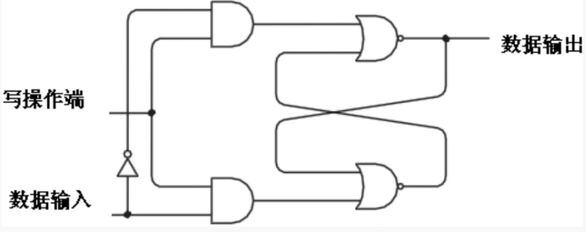
它的简化图为
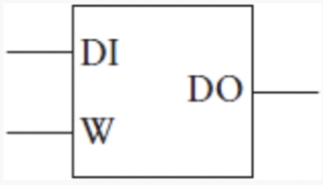
我们很容易想到将其组织成多位锁存器，它的逻辑结构为
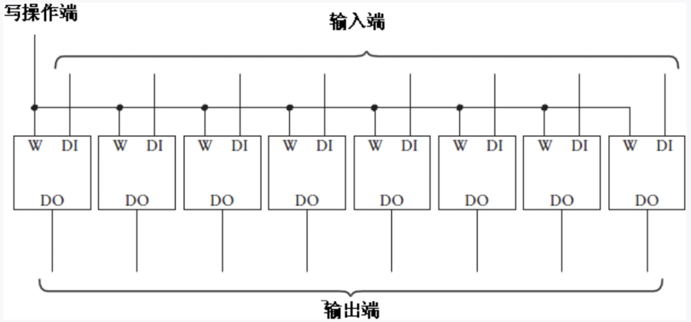
它的简化图为
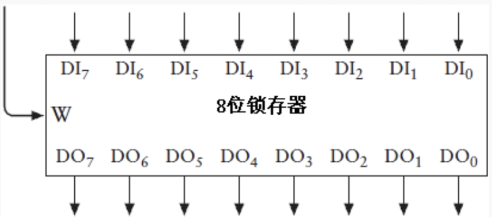
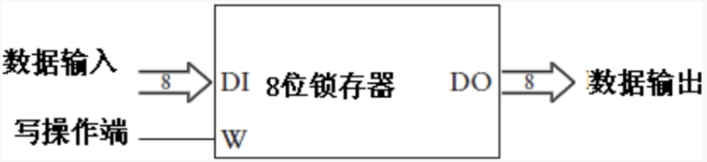
但这种锁存器有一个问题，就是他只能统一写入一个数。我们希望锁存器能将输入信号数据分8次独立存储，也就是说：我们只想存储8个单独的比特，而不是存储1个8位二进制数。
8-1选择器（8-Line-to-1-Line Data Selector）
为了解决这个问题，我们可以使用8-1选择器来解决这个问题
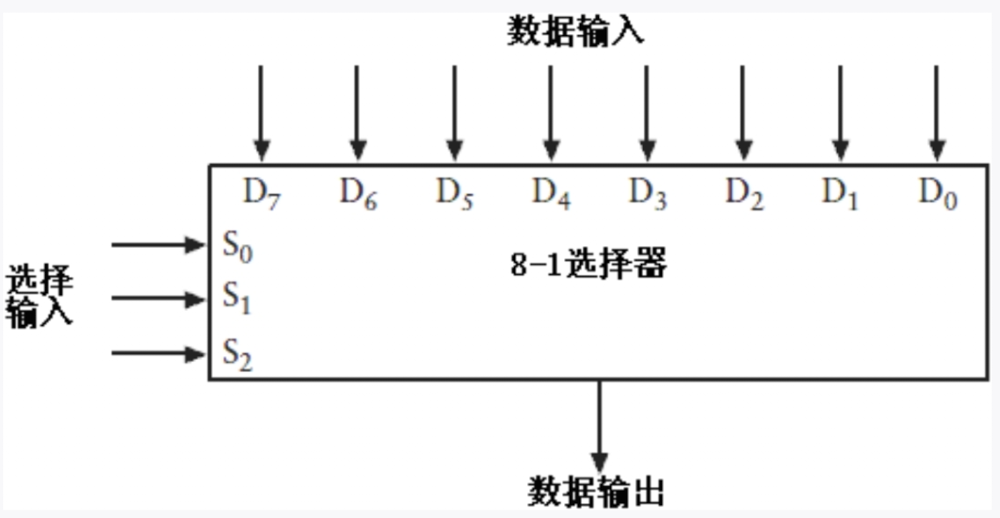
选择输入端的功能就是选择一个输入端数据，然后使其在输出端输出。如果选择输入端为000，则将D0锁存器的值输出；若选择端为111，则D7锁存器的值将被输出；若选择端为101，则相应地输出D5的值。系统的真值表如下所示
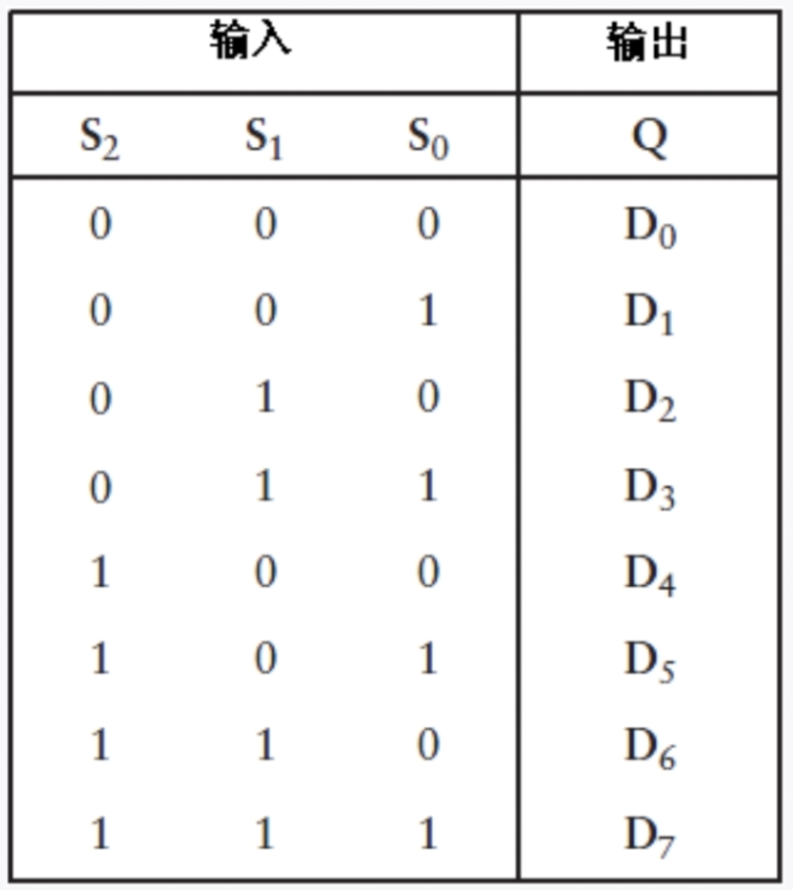
8-1选择器主要组成部件为：三个反向器、八个4端口输入与门、一个8端口输入或门，系统的组织结构如下图所示。
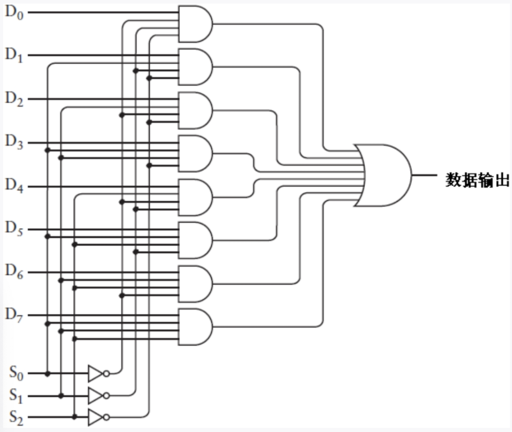
注意D0-D7数据端与S0-S2选择端的链接方式，例如：D1中的S0不经过反向器
我们的目的是通过某种方式连接8个1位锁存器，使自己能够从一个输入信号端写入数据，还能从一个输出信号端鉴别出数据。现在我们已经成功地使用了一个8-1选择器对8个锁存器进行了选择操作，并将相应锁存器的数据输出，下面是电路的结构图。
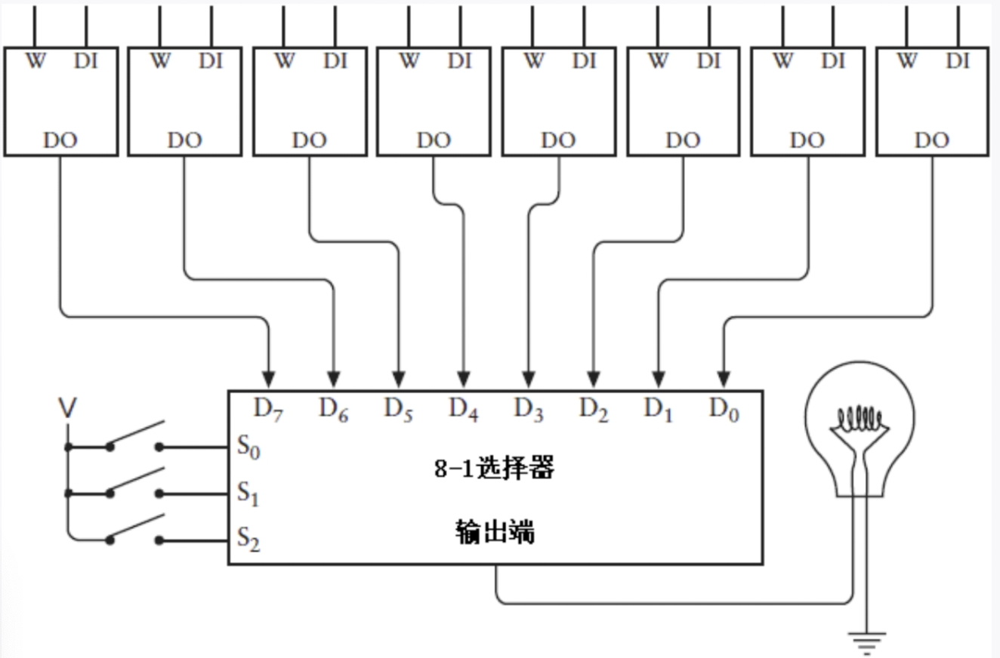
3-8译码器（3-to-8-Decoder）
输入端包括了数据输入信号及写操作信号。可以把所有数据输入信号在锁存器的输入端连接在一起。但8个写入信号是不可以连在一起的，因为我们很可能要向每个锁存器依次写入数据。除此之外还需要一个独立的写入信号，它能被路由到任意（且唯一）的锁存器上，所以我们还需要一个3-8译码器，来控制输入。
3-8译码器每次只会有一个锁存器输出为1，其余均为0
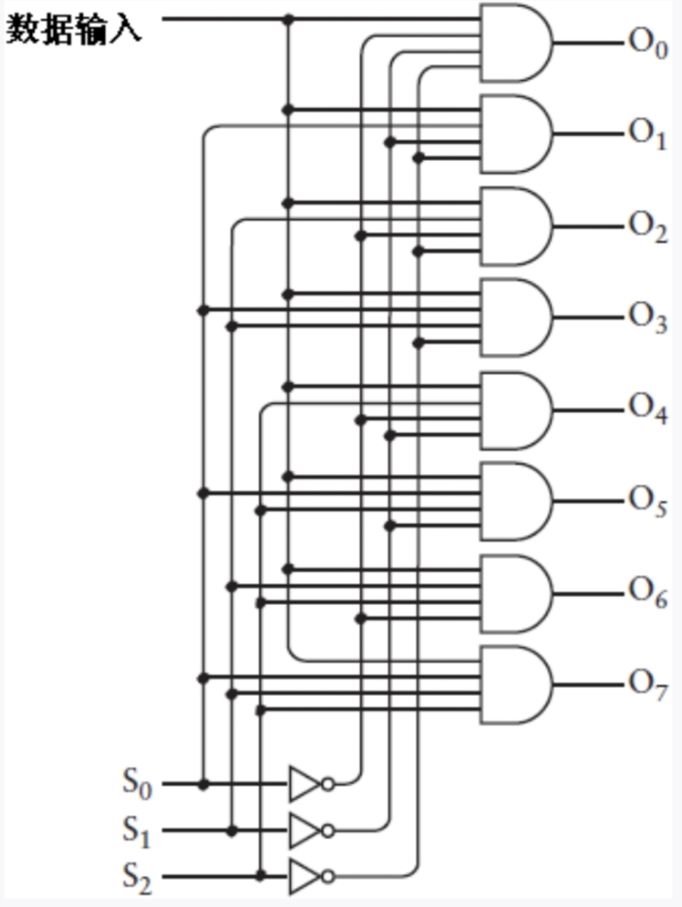
它的逻辑表如下：
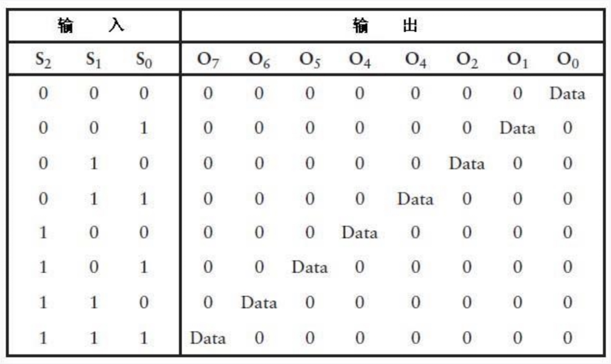
现在我们将3-8译码器加入到电路中就形成了完整的系统
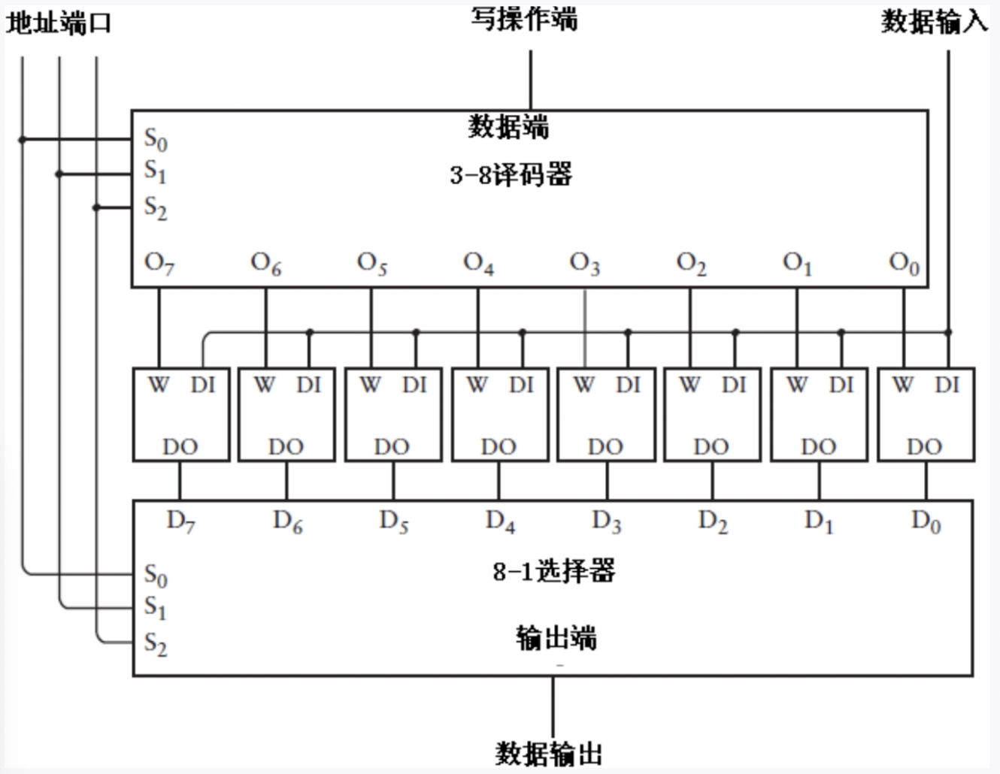
值得注意的是，译码器和选择器具有相同的选择信号，在上图中这三个信号一起被称为地址端口(Address)。
8x1 RAM 与 RAM阵列
这种配置下的锁存器在有的资料中也被称为读/写存储器(read/write memory)，但更普遍的叫法是随机访问存储器(Random Access Memory)，或RAM（和单词animal发音类似）。可以认为我们讨论的这种存储器是可存储8个独立比特的RAM，它的简化结构图如下所示。
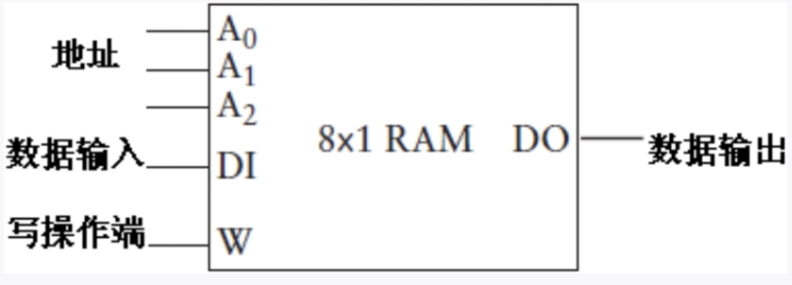
上图所示的电路之所以能够被称为存储器是因为它可以保存信息。而能够被称为读/写存储器是因为它不仅可以在每个锁存器中存储新的数据（可以把这种功能称为写数据），而且我们还可以检查每个锁存器都保存了什么数据（可以把这种功能称为读数据）。之所以可以被称为随机访问存储器，是因为读写操作很自由，我们只需要改变地址及相关的输入，就可以从8个锁存器中读出或写入需要的数据。相比于其他的顺序型的存储器——这种存储器在使用时有一定的限制，如果想要读取地址为101的数据，必须先把地址为100的数据读取出来。
**将RAM进行特殊的配置可形成RAM阵列(Array)**，我们所讨论的这种RAM阵列以8×1（读做8乘1）的方式组织起来。阵列以1比特作为存储单位，共存储8个单位的数据。所以这个RAM阵列中能存储的位数等于8与1的乘积。
RAM阵列的组合形式多种多样。比如我们可以通过共享地址的方式可以把两个8×1的RAM阵列连接起来，如下图所示。
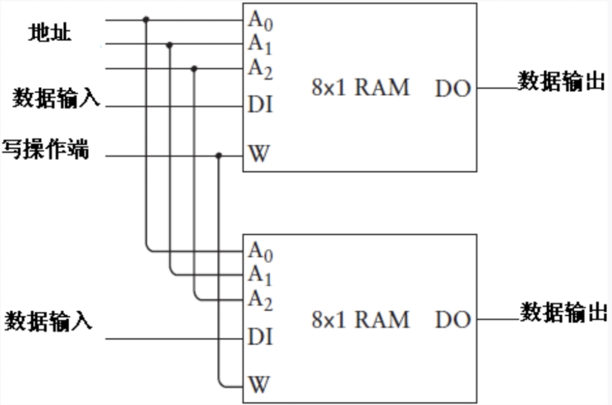
我们把这两个8×1的RAM阵列的地址和输出都分别看成一个整体，这样就得到了一个8×2的RAM阵列，如下图所示。
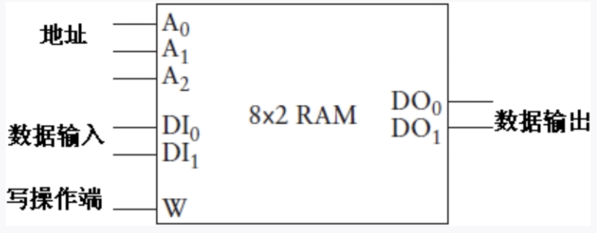
需要注意的是：这个RAM阵列可存储的二进制数依然是8个，但它的位宽为2位。即它可以存储8个2位的二进制数
我们还可以把两个8×1的RAM阵列看做是两个锁存器，使用一个2-1选择器和一个1-2译码器就可以把它们按照单个锁存器连接方式进行集成，下面给出了这种方案的电路图。他可以存储16个1位的二进制数
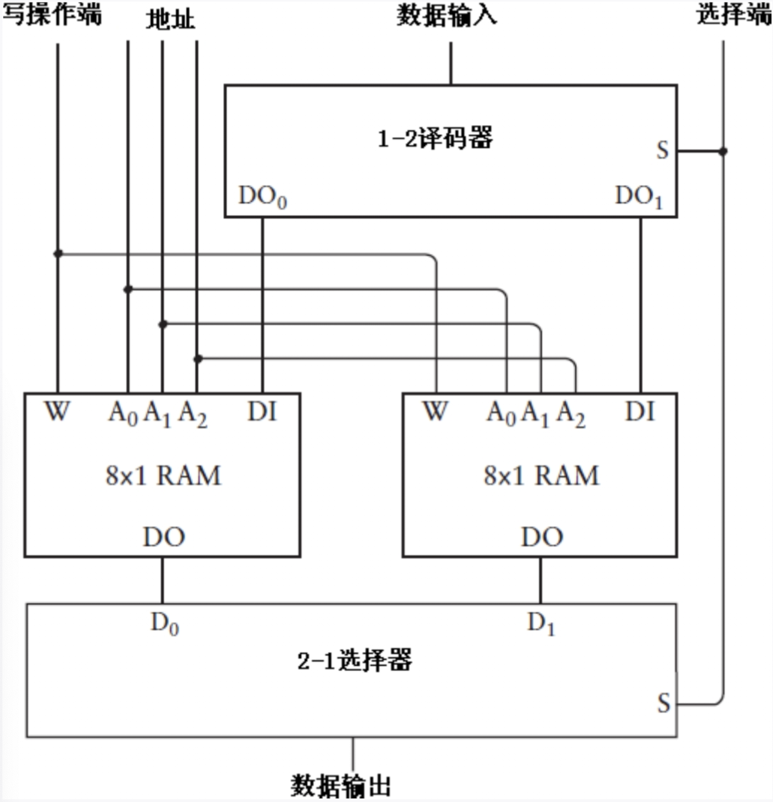
我们将选择端连上了译码器和选择器，主要作用是在两个8*1 RAM阵列中选择一个输出，本质上它扮演了第4根地址线的角色。因此这种结构实质上是一种16×1的RAM阵列，如下图所示。这样我们就可以用它来存储16个1位的二进制数了。
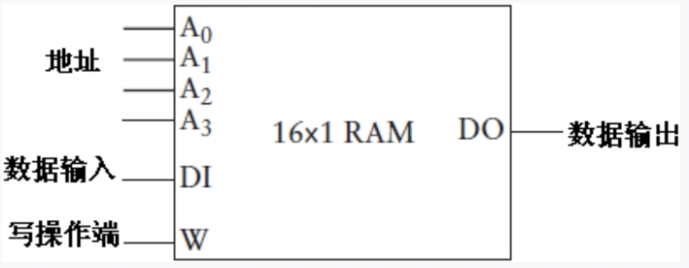
上图所示的RAM阵列存储容量为16个单位，每个单位占1位。
你是否有发现RAM阵列的存储容量与地址输入端个数的关系呢？
RAM阵列的存储容量=2^地址输入端的个数
64K*8 RAM
同样的我们可以搭建一个更大规模的RAM阵列
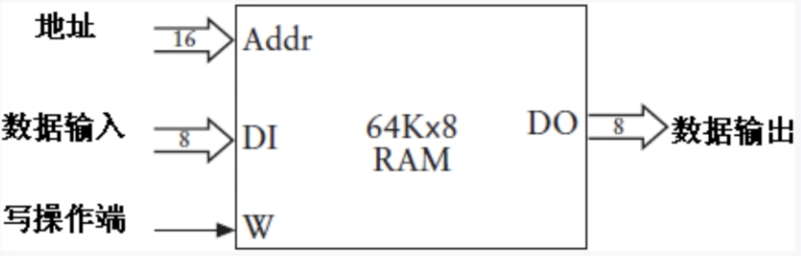
这个RAM阵列需要配备16位的寻址端。换句话说，该地址恰好可以用2个字节表示。将地址范围转化为十六进制就是0000h～FFFFh。
值得一提的是：存储一个比特位需要9个继电器，而我们搭建的这个64K*8的RAM阵列至少需要500万个继电器，值得骄傲一下。
这里我们可以用一个控制面板来辅助我们管理这块64KB存储器的操作——包括写操作和读数据
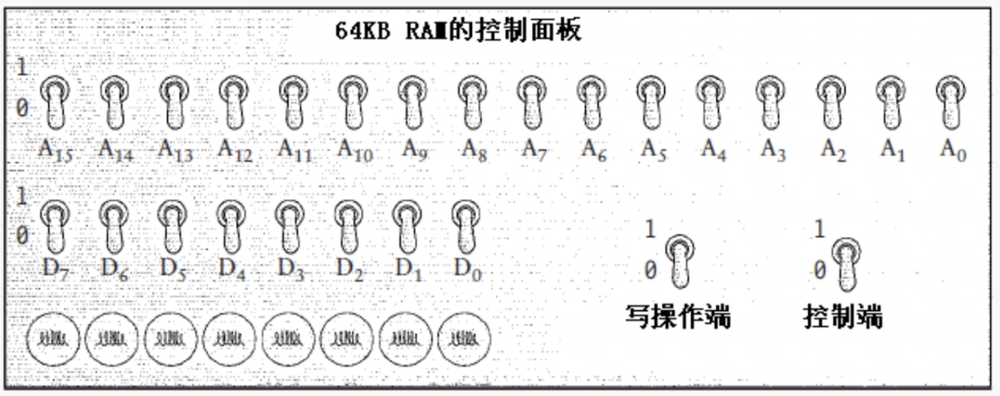
初始状态下所有的开关均置为0。其中右下角有一个标识为控制端(takeover)的开关，这个开关的作用是确定由控制面板还是由外部所连接的其他电路来控制存储器。如果其他电路连接到与控制面板相连的存储器，这时控制端置0（如图所示），此时存储器由其他电路系统接管，控制面板上的其他开关将不起任何作用；当控制端置1时，控制面板将重新获得对存储器的控制能力。
这种功能可以用一些2-1选择器来实现。仔细数一下会发现，我们需要25个2-1选择器——其中包括16个地址输入端、8个数据输入端，以及1个写操作端。电路如下图所示。
当控制端开关断开时，RAM阵列的地址端、数据输入和写操作端的数据全部来源于外部信号，也就是在2-1选择器的左上角的输入信号；当控制端开关闭合，RAM阵列的地址端、数据输入端和写操作端的数据来源于控制面板开关发出的信号。但最终RAM阵列的输出信号都会传输到8个灯泡上或其他可能的地方。
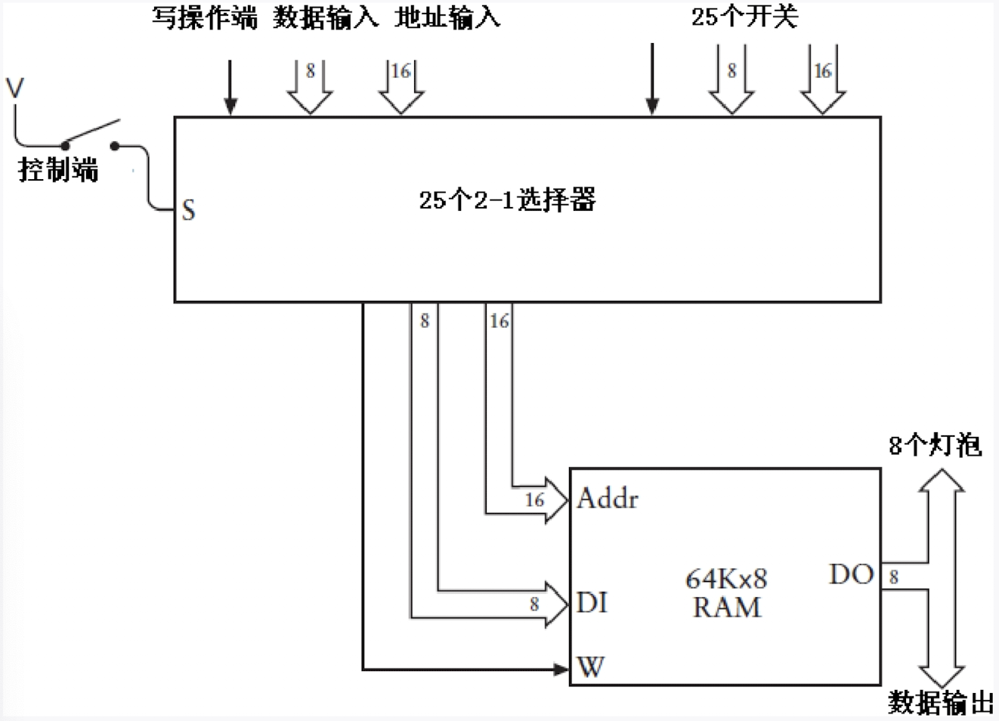
下面这幅是控制面板与64K×8 RAM阵列的逻辑结构框图。
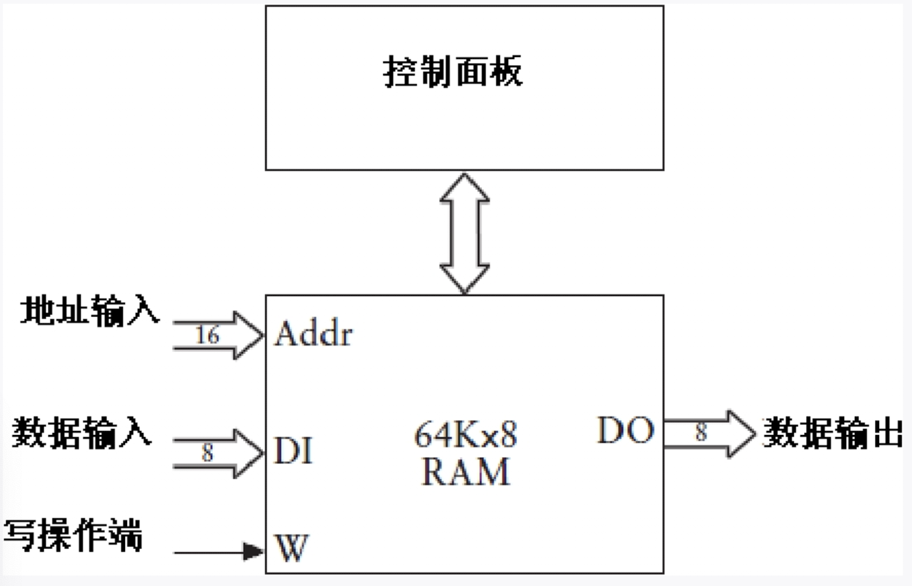
当控制端开关闭合时，通过操作16个地址开关，可以选择65,536个地址中的任何一个，灯泡的状态将表示该地址中所保存的8位数据。我们可以使用8个数据开关表示出一个新数，然后把写操作端置1，从而将数据写入存储器。
64K×8的RAM阵列和控制面板这一组合的确很实用，它可以帮助我们存储65,536个8位数据并且读取其中的任意一个。与此同时，我们也给其他部件提供了接入系统的机会——需要接入系统的通常是一些电路部件——这些部件可以轻易地读取并利用存储器中存放的数据，还可以把数据写入存储器。